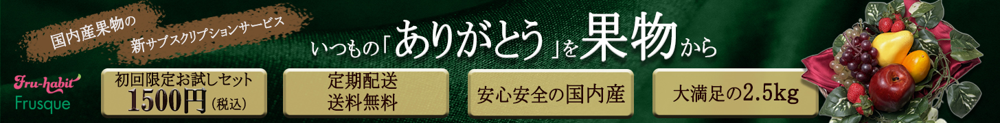

架空の企業バナー
架空のフルーツサブスクリプションサービスの広告バナーを2パターン制作
概要
架空のスタートアップ企業「株式会社フルスク」が提供する、フルーツのサブスクリプションサービス 『フルハビ（Full-habit）』の広告バナーを制作しました。国内生産の規格外品のフルーツを、 ユーザーの希望する頻度で自宅へ配送するサービスという設定です。
共通のCV（コンバージョン目標）として「1,500円初回送料込みお試しセットサイトへの誘導、 1か月お試し会員3,000名以上の加入」「お試しセット申し込み時のサブスクリプションへの加入」の 2軸を想定し、ターゲット層の異なる2パターンのバナーを企画・制作しています。
B「ありがとう」贈答訴求パターン


親御さんや日頃お世話になっている方への贈り物として利用いただくシーンを想定し、 感謝の気持ちが伝わるような、安心感と落ち着きのあるデザインに仕上げました。
工夫した点・学んだこと
-
ターゲット別の配色設計
同じ商材でも、ターゲットが変わればメインカラーもコピーの温度感も変える必要があると実感しました。ピンク×「自分へのご褒美」、グリーン×「感謝」で、狙う心理を色とコピーの両方で表現することを意識しました。
-
サイズ違いのレイアウト調整
同じ素材でミディアムレクタングル（正方形に近い）とリーダーボード（横長）を作る際、単純な縮小ではなく、要素の配置や情報の優先順位をサイズごとに考え直す必要があることを学びました。
-
レタッチとコピーの両立
スチール撮影・レタッチ・コピーライティングまで一人で担当したことで、写真の見え方とキャッチコピーの言葉選びが互いに影響し合うことを体感し、デザインだけでなく企画段階から一貫して考える大切さを学びました。